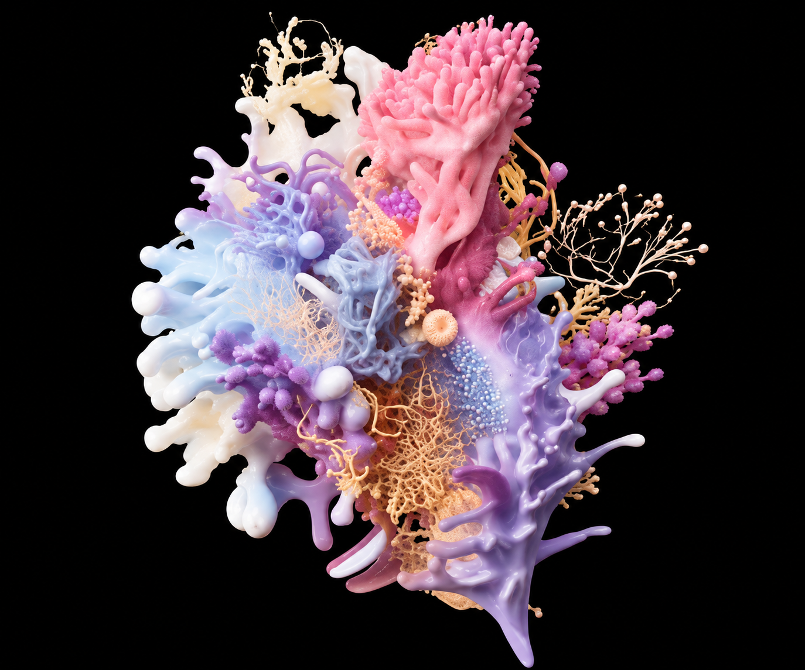

Form is always becoming.
A visual exploration of organic structures, movement and the shifting relationship between color and form.
GARMENTS SHIFT, LIGHT SCATTERS, AND FORMS FLOW INTO ABSTRACTION. THE SEASON EMBODIES FLUIDITY—EVERYTHING REMAINS FIXED FOR LONG.
DISCOVER MORE
AS YOU MOVE, IMMERSE THE DETAILS. HOVER OVER THE IMAGES TO DISCOVER MORE.
A visual exploration of organic structures, movement and the shifting relationship between color and form.